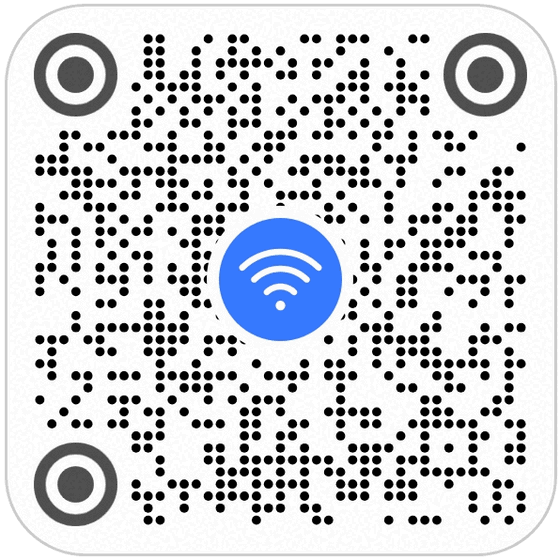
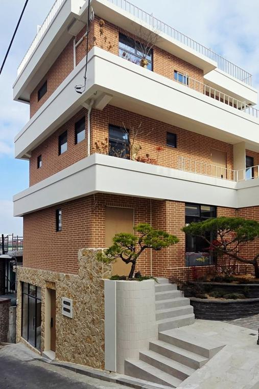

이 가이드 사용법How to use this guide
- 한/ENG언어 바꾸기오른쪽 위 ‘한/ENG’ 버튼을 누를 때마다 한국어와 영어가 바뀌어요.Switch languageTap the “한/ENG” button at the top right to switch between Korean and English.
- 메뉴로 이동화면 위 메뉴를 누르면 그 내용으로 바로 가요. 메뉴는 옆으로 밀면 더 있어요.Jump with the menuTap a menu item at the top to jump there. Swipe the menu sideways to see more.
- 눌러서 펼치기기기 이름을 누르면 사용법이 펼쳐지고, 다시 누르면 접혀요.Tap to openTap an appliance to open its guide, and tap again to close it.
- 그림 크게 보기그림을 누르면 크게 열려요. 두 손가락으로 확대하고, 다 보면 ‘닫기’를 눌러요.Zoom diagramsTap a diagram to open it full size. Pinch to zoom, then tap “Close”.
- 눌러서 복사복사 아이콘이 있는 버튼은 누르면 바로 복사돼요. 화면 아래에 ‘복사됨’이 잠깐 떠요.Tap to copyButtons with a copy icon copy their text. You'll see a short “copied” note at the bottom.
- 지도 열기‘지도’ 버튼은 네이버지도에서 그 장소를 열어요.Open the map“Map” buttons open the place in Naver Map, the best map app in Korea.
- 체크리스트체크아웃 목록은 직접 체크할 수 있고, 이 휴대폰에 기억돼요.ChecklistTick off the check-out list as you go. Your ticks are saved on this phone.

게스트 가이드북Guest guidebook
남산 자락 조용한 동네 필동, Copen Haus에 오신 것을 환영합니다.
Welcome to Copen Haus in Pildong, a quiet neighborhood at the foot of Namsan.
기본 정보The basics
명동까지 걸어서 약 10분. 남산골한옥마을과 충무로역이 가깝고, 서울역·광화문까지 대중교통으로 쉽게 다닐 수 있어요.
Myeongdong is about a 10-minute walk away. Namsangol Hanok Village and Chungmuro Station are close by, and Seoul Station and Gwanghwamun are an easy ride.
- 주소Address
- 서울특별시 중구 필동로8길 32-1432-14, Pildong-ro 8-gil, Jung-gu, Seoul
- 호스트Host
- Lisa · +82-10-9328-0969
카카오톡 · LINE · WhatsApp (ID: free01270)KakaoTalk · LINE · WhatsApp (ID: free01270) - 출입 방법Getting in
- 도어락 비밀번호는 체크인 당일 에어비앤비 메시지로 보내드려요.We send the door lock code by Airbnb message on check-in day.
- 입구·층Entrance
- 건물 1층Ground floor (1F)
- 짐 보관Luggage
- 미리 알려주시면 안내해 드려요.Let us know in advance and we'll help you arrange it.
- Wi-Fi
눌러서 복사 · 또는 카메라로 QR 코드를 찍으세요Tap to copy · or scan the QR code with your camera



집 사용법Using the house
기기를 누르면 그림과 번호별 설명이 펼쳐져요. 그림을 누르면 크게 볼 수 있어요.
Tap an appliance to open its guide. Tap a diagram to see it larger. (Labels on the appliances are in Korean, so match them by number.)
난방 · 온수Heating & hot water현관 오른쪽 벽 온도조절기Thermostat on the wall, right of the entrance
현관 오른쪽 벽에 있는 온도조절기로 난방과 온수를 조절해요.
Use the thermostat on the wall to the right of the entrance for both heating and hot water.
- 전원: 보일러를 켜고 끌 때 눌러요.
- 외출: 집을 비울 때 눌러요.
- 난방: 난방 버튼을 누르고 다이얼을 왼쪽으로 돌리면 온도가 내려가고, 오른쪽으로 돌리면 올라가요.
- 전원 · Power: turns the boiler on and off.
- 외출 · Away: press when you go out.
- 난방 · Heating: press it, then turn the dial right to warm up or left to cool down.
- 화면왼쪽 숫자는 실내온도, 오른쪽 숫자는 온수온도예요.
- 온수온수 버튼을 누르고 다이얼로 온수 온도를 맞춰요.
- 예약시간 예약을 설정해요.
- 온돌바닥 난방(온돌) 기능을 설정해요.
- ScreenLeft number is the room temperature, right number is the hot-water temperature.
- 온수Hot water: press it, then turn the dial to set the water temperature.
- 예약Timer: set a schedule.
- 온돌Ondol: underfloor heating mode.
세탁기Washing machine코스 선택 → 동작 버튼 길게Pick a course, then hold Start
전원을 켜고 코스를 고른 뒤 동작 버튼을 길게 누르면 시작돼요.
Turn it on, choose a course, then press and hold Start.
- 1코스 다이얼: 돌려서 코스를 골라요 (표준세탁이 기본)
- 2세탁온도: 물 온도 선택 (냉수~90도)
- 3헹굼횟수: 헹굼 횟수 선택 (1~5회)
- 4탈수세기: 탈수 세기 선택 (섬세~최강)
- 5오염도: 낮음 · 보통 · 높음 중 선택
- 6종료예약: 세탁이 끝나는 시간을 예약해요
- 7버블불림: 거품으로 찌든 때를 불려서 세탁해요
- 8세탁물추가: 작동 중 빨래를 더 넣고 싶을 때 눌러요
- 9스마트컨트롤: 스마트폰 앱(SmartThings)으로 조작해요
- 10전원: 세탁기를 켜고 꺼요
- 11동작/일시정지: 길게 눌러 시작, 누르면 잠시 멈춰요
- 12어린이보호: 세탁온도 + 헹굼횟수를 함께 3초 누르면 잠겨요
- 1Course dial: turn to pick a course (표준세탁 Standard is the default)
- 2Temperature: cold to 90°C
- 3Rinses: 1 to 5
- 4Spin: delicate to max
- 5Soil level: low, normal or high
- 6Finish timer: set when the wash should end
- 7Bubble soak: soaks tough dirt with foam
- 8Add laundry: press to add items mid-cycle
- 9Smart control: control it with the SmartThings app
- 10Power: on and off
- 11Start / Pause: hold to start, press to pause
- 12Child lock: hold Temperature + Rinses together for 3 seconds
건조기Dryer코스 선택 → 동작 버튼 길게Pick a course, then hold Start
전원을 켜고 코스를 고른 뒤 동작 버튼을 길게 누르면 시작돼요.
Turn it on, choose a course, then press and hold Start.
- 1코스 다이얼: 돌려서 코스를 골라요 (표준건조가 기본)
- 2건조정도: 1~4단계 (3이 표준)
- 3건조시간: 20 · 40 · 60 · 90분 이상 (시간건조 · 선반건조 코스)
- 4다림질알림: 다림질하기 좋은 상태일 때 알려줘요
- 5구김방지: 건조 후 구김을 줄여줘요
- 6열풍내부살균: 열풍으로 건조기 안을 살균해요
- 7드럼라이트: 건조기 안 불을 켜고 꺼요
- 8소리 끔: 알림음을 꺼요
- 9스마트컨트롤: 스마트폰 앱(SmartThings)으로 조작해요
- 10전원: 건조기를 켜고 꺼요
- 11동작/일시정지: 길게 눌러 시작, 누르면 잠시 멈춰요
- 12어린이보호: 건조정도 + 건조시간을 함께 3초 누르면 잠겨요
이불털기/패딩케어 코스는 에어워시 코스예요.
- 1Course dial: turn to pick a course (표준건조 Standard is the default)
- 2Dryness: levels 1 to 4 (3 is standard)
- 3Dry time: 20, 40, 60 or 90+ minutes (Timed and Rack courses)
- 4Iron alert: beeps when clothes are just right for ironing
- 5Wrinkle care: reduces creases after drying
- 6Hot-air sanitize: sanitizes the drum with hot air
- 7Drum light: light inside on/off
- 8Mute: turns off the beeps
- 9Smart control: control it with the SmartThings app
- 10Power: on and off
- 11Start / Pause: hold to start, press to pause
- 12Child lock: hold Dryness + Dry time together for 3 seconds
The 이불털기/패딩케어 (bedding refresh / padding care) course is an Air Wash course.
전자레인지Microwave다이얼 2개: 모드 → 시간Two dials: mode, then time
다이얼 2개만 돌리면 돼요. 모드를 고르고 시간을 맞춰 주세요.
Just two dials: pick a mode, then set the time.
- 1음식을 넣고 문을 닫아요
- 2선택모드 다이얼을 돌려 모드를 맞춰요
약 · 중 · 강은 화력 세기(강할수록 빨리 데워져요), 데우기는 남은 음식이나 식은 음식, 해동은 얼린 음식
- 3분(min) 다이얼을 시계 방향으로 돌려 시간을 맞춰요
최대 30분
- 4시간이 다 되면 문을 열고 꺼내요
- 1Put the food in and close the door
- 2Turn the mode dial (선택모드)
약 · 중 · 강 = low · medium · high power (higher heats faster). 데우기 = reheat leftovers. 해동 = defrost.
- 3Turn the time dial (분 min) clockwise
Up to 30 minutes
- 4When it stops, open the door and take it out
주의 · 금속 그릇, 알루미늄 호일, 밀폐 용기는 넣지 마세요.
Careful · No metal dishes, foil or sealed containers.
인덕션 (3구)Induction cooktop전원 → 화구 화력 조절Power on, then set each burner
조작부의 번호와 아래 설명을 함께 확인해 주세요.
Match the numbers on the touch panel with the list below.
- 9전원: 전원을 켜고 꺼요
- 1·2·4화력 − / +: 1번 · 2번 · 3번 화구의 불 세기를 조절해요
- 5화구 선택: 작동 중인 화구를 골라요
- 6작동 / 일시정지
- 3타이머 − / +: 최대 60분
- 7터보: 3번 화구를 최대 화력으로 (10분 뒤 원래 단계로)
- 8잠금: 잠금 상태를 보여줘요
- HH 표시: 화면에 H가 보이면 아직 뜨거워요. 조심하세요.
- 9Power: on and off
- 1·2·4Heat − / +: for burners 1, 2 and 3
- 5Burner select: choose which active burner to adjust
- 6Start / Pause
- 3Timer − / +: up to 60 minutes
- 7Turbo: max heat on burner 3 (drops back after 10 minutes)
- 8Lock: shows when the panel is locked
- HH on the display: the surface is still hot. Be careful.
TV 리모컨TV remote넷플릭스·유튜브 바로가기 버튼Netflix and YouTube shortcut buttons
자주 쓰는 버튼만 번호로 알려 드릴게요.
Here are the buttons you'll actually use.
- 1전원: TV를 켜고 꺼요
- 2음소거: 소리를 잠시 꺼요
- 3숫자 버튼: 채널 번호를 눌러요
- 4방향키 · 확인: 이동하고 선택해요
- 5이전: 이전 화면으로 가요
- 6홈: 홈 화면으로 가요
- 7Live TV: TV 방송을 봐요
- 8음량 + / −: 소리를 키우고 줄여요
- 9채널 + / −: 채널을 바꿔요
- 10외부입력: 연결한 기기 화면으로 바꿔요
- 11앱 버튼: 넷플릭스 · 유튜브 · 프라임 · 디즈니+ 바로 열기
- 12재생 버튼: 되감기 · 재생/멈춤 · 빨리감기
- 1Power
- 2Mute
- 3Number keys: enter a channel
- 4Arrows · OK: move and select
- 5Back
- 6Home
- 7Live TV: watch broadcast TV
- 8Volume + / −: sound up or down
- 9Channel + / −: change channels
- 10Input: switch to a connected device
- 11App buttons: Netflix, YouTube, Prime Video, Disney+
- 12Playback: rewind, play/pause, fast-forward
넷플릭스, 디즈니+ 등은 개인 계정으로 로그인해 이용하실 수 있어요.
Sign in with your own account for Netflix, Disney+ and others.
쓰레기 · 하우스 룰Trash & house rules
쓰레기 버리는 법Trash & recycling
봉투 위치와 내놓는 자리: 1층 현관문 옆. 시간·장소를 어기면 과태료 10~30만원이 부과돼요.
Bags are kept, and trash goes out, next to the ground-floor front door. Wrong day, time or place can mean a ₩100,000–300,000 fine.
하우스 룰House rules
- 1실내 금연입니다. 건물 앞·계단에서도 흡연하지 말아주세요.
- 2밤 10시~아침 8시는 조용히 해주세요. 골목과 계단의 대화도 잘 울립니다.
- 3파티·행사는 불가합니다.
- 4예약 인원 외 방문객은 미리 문의해 주세요.
- 5실내에서는 신발을 벗어주세요.
- 6반려동물은 허용이 불가합니다.
- 7파손된 물건이 있으면 바로 알려주세요. 솔직하게 말씀해 주시면 됩니다.
- 1No smoking indoors, and please don't smoke in front of the building or on the stairs either.
- 2Quiet hours are 10 PM – 8 AM. Voices carry in the alley and stairwell.
- 3No parties or events.
- 4Please ask us first before inviting anyone not on the booking.
- 5Please take off your shoes indoors.
- 6No pets.
- 7If anything is broken, tell us right away. Being honest is all we ask.
체크아웃 전에 부탁드려요Before you check out
찾아오는 길Getting here
가장 가까운 역은 지하철 3·4호선 충무로역이에요. 남산 쪽 오르막이라 큰 캐리어가 있다면 택시를 권해요.
The nearest station is Chungmuro (Lines 3 & 4). It's uphill toward Namsan, so take a taxi if you have big suitcases.
차로 인천공항 약 60~80분 · 김포공항 약 40~50분 · 서울역 약 10~15분By car: Incheon Airport about 60–80 min · Gimpo Airport about 40–50 min · Seoul Station about 10–15 min
충무로역 3번 출구 → Copen HausWalking route from Exit 3
약도이며 실제 축척과 달라요. 정확한 길찾기는 아래 네이버지도 버튼을 이용하세요. 큰 캐리어가 있다면 오르막이 적은 택시를 권해요.Sketch map, not to scale. For exact directions, use the Naver Map button below. With big suitcases, a taxi saves you the uphill walk.
- 13번 출구로 나오기
극동빌딩 맞은편, 퇴계로34길로 진입
- 2남산골한옥마을 정문
출구에서 도보 3~4분, 입장 무료
- 3한옥 · 천우각 연못 지나기
한옥은 월요일 휴관, 정원 길은 매일 열려 있어요
- 4전통정원 지나 필동 쪽으로
정원을 빠져나와 필동로로
- 5필동로8길로 들어서면 Copen Haus
서울특별시 중구 필동로8길 32-14
- 1Leave by Exit 3
Across from the Kukdong Building, turn into Toegye-ro 34-gil
- 2Namsangol Hanok Village main gate
3–4 minutes from the exit, free entry
- 3Pass the hanok houses and Cheonugak pond
The hanok close on Mondays, but the garden path is open every day
- 4Through the traditional garden toward Pildong
Exit the garden onto Pildong-ro
- 5Turn into Pildong-ro 8-gil, and you're here
32-14, Pildong-ro 8-gil, Jung-gu, Seoul
주변 맛집 · 카페Food & coffee nearby
대표 맛집은 미쉐린 빕구르망 평양냉면집 필동면옥. 점심엔 줄이 길어 조금 일찍 가세요.
The local star is Pildong Myeonok, a Michelin Bib Gourmand spot for Pyongyang-style cold noodles. Go a little early at lunch to beat the queue.
맛집Restaurants
카페Coffee & tea
영업시간은 바뀔 수 있으니 방문 전 지도 앱에서 확인해 주세요.
Opening hours change, so check the map app before you go.
둘러보기Explore
명동까지 걸어서 약 10분. 쇼핑 · 길거리 음식 · 카페. 지하철 탈 필요 없이 산책하듯 다녀오세요. 밤늦게 돌아올 때도 가까워요.
Myeongdong is about a 10-minute walk. Shopping, street food and cafés, no subway needed, and an easy walk back late at night.
명동 길찾기Directions to Myeongdong걸어서 가는 곳On foot
남산골한옥마을과 필동 예술통도 집 앞 산책 코스예요.Namsangol Hanok Village and Pildong Art Street make an easy walk from the door.
조금 더 멀리A little further
남산순환버스 06:30~23:00 · 01A 6~9분 / 01B 15~18분 간격. 01A는 남산타워를 지나 경복궁·청와대·안국역까지 가서 도심 관광에도 좋아요.
Namsan circular buses run 06:30–23:00, 01A every 6–9 min and 01B every 15–18 min. Bus 01A continues past the tower to Gyeongbokgung, Cheong Wa Dae and Anguk Station, handy for sightseeing.
공항 픽업 · 밴 투어Pick-up & van tours
무거운 캐리어와 오르막 골목 걱정 없이, 공항에서 Copen Haus 문 앞까지 전용 차량으로 모셔다 드려요. 유료 서비스예요.
Skip the heavy bags and uphill lanes: a private van takes you from the airport to our door. This is a paid service.
공항 픽업 (편도)Airport pick-up (one way)
| 구간From | 스타리아Staria | 쏠라티Solati |
|---|---|---|
| 인천공항Incheon Airport약 60~80분about 60–80 min | ₩90,000 | ₩180,000 |
| 김포공항Gimpo Airport약 40~50분about 40–50 min | ₩70,000 | — |
| 서울역Seoul Station약 10~15분about 10–15 min | ₩60,000 | — |
원화 기준 · 추가 인원(스타리아만) 1인당 +10,000원 · 카시트 +20,000원
Prices in KRW · extra passenger (Staria only) +₩10,000 each · child seat +₩20,000
원데이 밴 투어 (10시간)One-day van tour (10 hours)
기사님과 함께 하루 10시간 동안 전용 차량으로 다녀오는 투어예요. 서울 시내부터 근교 여행지까지 편하게 다녀오세요.
A private van and driver for 10 hours, from Seoul's sights to day trips out of the city.
| 투어Tour | 스타리아Staria최대 6명up to 6 | 쏠라티Solati최대 10명up to 10 |
|---|---|---|
| 서울 시티투어Seoul city tour원하는 서울 명소를 하루 코스로Your pick of Seoul sights | ₩300,000 | ₩450,000 |
| 남이섬Nami Island강원 춘천 · 메타세쿼이아 길Chuncheon · metasequoia lane | ₩330,000 | ₩550,000 |
| 알파카월드Alpaca World강원 홍천 · 알파카 산책 체험Hongcheon · walk with alpacas | ₩350,000 | ₩600,000 |
경로·목적지·전체 일정에 따라 요금이 달라질 수 있어요.
Prices may change depending on route, destinations and schedule.
예약 방법How to book
- 1예약 요청도착 48시간 전까지 에어비앤비 메시지로
- 2예약 확정매니저(Mr. Cho)가 WhatsApp으로 안내
- 3입국장에서 만남드라이버가 이름 피켓을 들고 기다려요
- 4숙소 도착요금은 도착 후 드라이버에게 현금으로
- 1RequestBy Airbnb message, at least 48 hours before you land
- 2ConfirmedOur manager, Mr. Cho, follows up on WhatsApp
- 3MeetYour driver waits in the arrival hall with a name sign
- 4ArrivePay the driver in cash when you arrive
- 날짜와 시간
- 항공편명 (공항 픽업 시)
- 인원
- 짐 개수와 크기
- 피켓에 적을 이름
- WhatsApp 연락처
- Date and time
- Flight number (for airport pick-up)
- Number of people
- Number and size of bags
- Name for the sign
- Your WhatsApp number
드라이버가 항공편 지연도 확인하고 있어요. 드라이버가 안 보이면 공항 무료 와이파이로 WhatsApp 연락 주세요.
Your driver tracks flight delays. If you can't find them, message on WhatsApp using the free airport Wi-Fi.
유용한 앱 · 비상 연락처Apps & emergencies
한국에서는 구글지도보다 네이버지도 · 카카오맵의 길찾기가 훨씬 정확해요.
In Korea, Naver Map and KakaoMap give far better directions than Google Maps.
- 네이버지도 / 카카오맵
- 길찾기, 대중교통, 영업시간
- 카카오 T
- 택시 호출
- 파파고
- 번역 (메뉴판 사진 번역 가능)
- 티머니 카드
- 지하철·버스 요금, 편의점에서 구입·충전
- Naver Map / KakaoMap
- Directions, transit, opening hours
- Kakao T
- Call a taxi
- Papago
- Translation, including photos of menus
- T-money card
- Subway and bus fares; buy and top up at convenience stores
비상 연락처Emergency numbers
가까운 시설Nearby essentials
어렵거나 궁금하면 언제든 연락 주세요
Stuck or curious? Message us anytime
호스트 Lisa · 카카오톡 · LINE · WhatsApp 어디로 보내셔도 괜찮아요Your host Lisa · KakaoTalk, LINE or WhatsApp, whichever you like
ID: free01270 · 앱이 안 열리면 Safari나 Chrome에서 이 페이지를 열어 주세요If an app doesn't open, open this page in Safari or Chrome
즐거운 여행 되세요! · 2026년 11월 기준
Enjoy your stay! · Information as of November 2026
출처: 서울시 문화분야 누리집(남산골한옥마을·남산국악당), 내 손안에 서울(남산서울타워·순환버스), 공항리무진 6015 노선 정보, 서울 중구청 쓰레기 배출안내, 미쉐린 가이드
Sources: Seoul Metropolitan Government culture site (Namsangol Hanok Village, Namsan Gugakdang), Seoul city news (N Seoul Tower, Namsan circular bus), airport limousine 6015 route info, Jung-gu Office waste guide, Michelin Guide